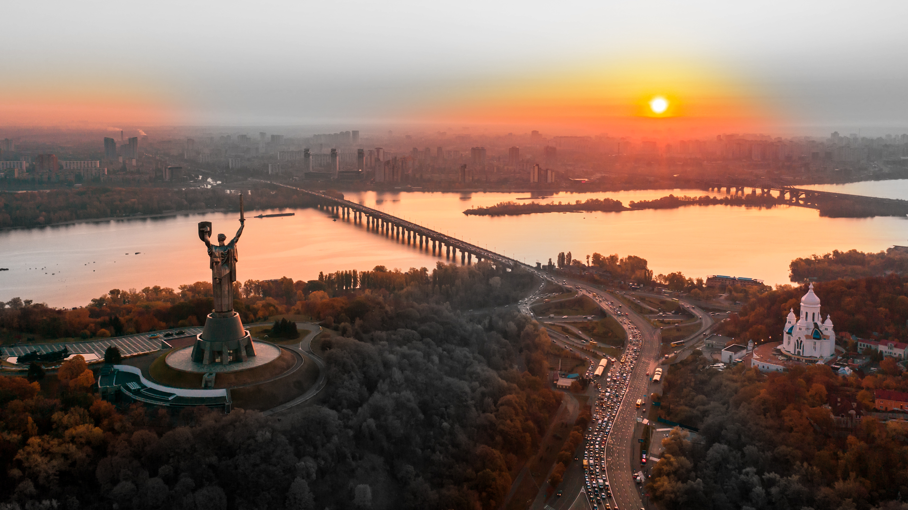

Народився у місті Донецьк.
Дата народження: 14.02.2005
Навчався у школі №3 "Сузірʼя", після чого останні 3 класи закінчував у технічному ліцеї НТУУ "КПІ" імені Ігоря Сікорського.
Київ — столиця України, місто з багатовіковою історією, де минуле зустрічається з сучасністю. Це місце, де старовинні Золоті ворота і величні собори стоять поруч із сучасними архітектурними шедеврами. Київ розкинувся на мальовничих пагорбах над Дніпром, оточений зеленими парками та широкими проспектами. Атмосфера міста поєднує у собі динаміку європейської столиці та тиху чарівність древньої культури. Тут відчувається душа народу, його боротьба за свободу та прагнення до майбутнього.
